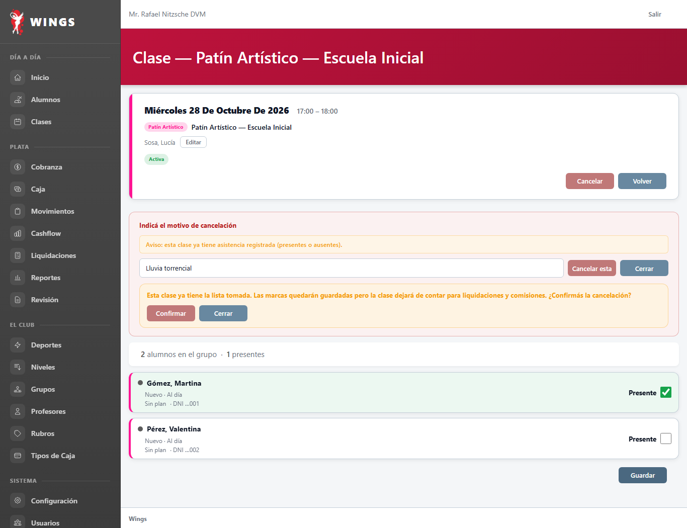
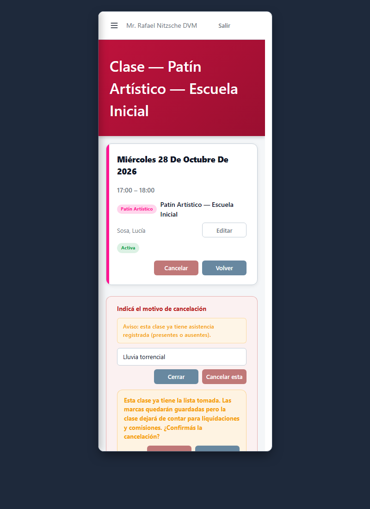
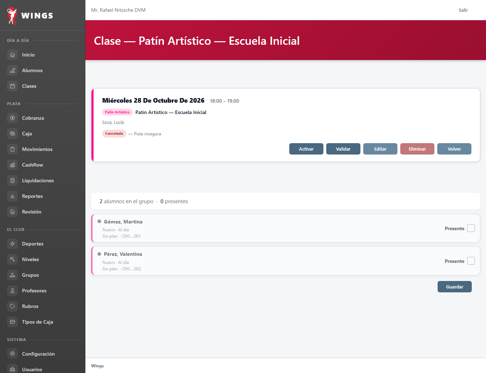
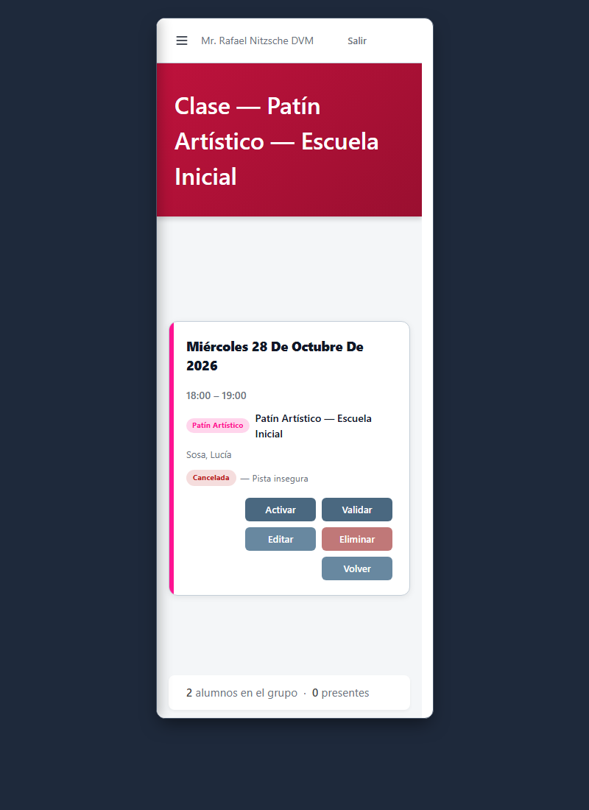
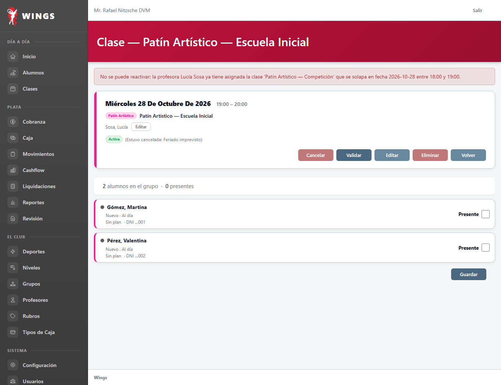

T62 — Cancelar y reactivar una clase: aviso por lista tomada, choque y motivo conservado
28/10/2026 · Implementación Gemini CyE · Capturas reales en Chrome headless a 1366 px y marco de 375 px.
- CLA-012.a: Si la clase tiene asistencia registrada (presente o ausente), antes de cancelar avisa que la lista ya está tomada y pide confirmación explícita. Si es serie, informa cuántas clases tienen lista tomada.
- CLA-012.b y c: Al confirmar la cancelación, las marcas de asistencia se conservan en la base pero la clase no suma para liquidación ni comisión.
- CLA-015.b: Al reactivar, si alguna profesora asignada tiene otra clase activa que se superpone en fecha y horario, se rechaza la reactivación y se explica con cuál choca.
- CLA-015.c: Al reactivar, se conserva que la clase estuvo cancelada, con su motivo, visible en la ficha de la clase.
- CLA-015.a y d: La clase reactivada vuelve a programada (Activa), permite registrar asistencia y vuelve a contar en listado y «Sin asistencia».
1. Aviso por lista tomada y confirmación obligatoria CLA-012.a
La clase ya cuenta con alumnos con asistencia registrada. Al abrir el panel de cancelación e intentar cancelar, el sistema muestra el aviso destacado explicando que las marcas quedarán guardadas pero la clase dejará de contar para liquidaciones y comisiones, exigiendo confirmación con botones con formato canónico del design system (ds-btn ds-btn--danger y ds-btn ds-btn--secondary).




2. Rechazo por choque de horario al reactivar CLA-015.b
Al intentar reactivar una clase cancelada, el sistema valida la disponibilidad de las profesoras asignadas mediante ClaseService::verificarDisponibilidadProfesor (filtrando únicamente clases activas). Si la profesora ya tiene otra clase activa en ese horario, la reactivación se bloquea y se muestra el mensaje detallando exactamente la profesora, el grupo y el rango de horario del choque.




3. Motivo conservado en ficha tras reactivar CLA-015.c
Al reactivar una clase sin choques, vuelve al estado programado (Activa) y motivo_cancelacion no se vacía: se conserva en la base de datos y se muestra visiblemente en la cabecera de la ficha entre paréntesis: (Estuvo cancelada: Feriado imprevisto). Las casillas de asistencia se reactivan y quedan disponibles para tomar lista.

